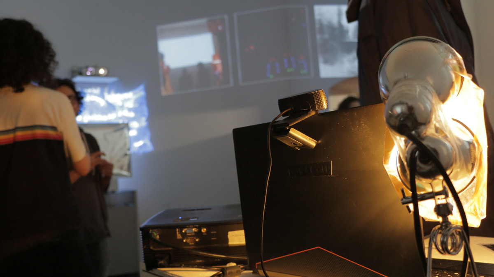

Experiments & happy accidents
14th Feb 2019
My work got featured!
It's Valentines day and I just found out my Instagram project got featured on Computer Arts almost a year ago (Issue 278, May 2018). Best gift ever lol.
Writer forgot to send update after the interview. Couldn't get a hold of a hard copy myself so here is the digital version:
27th Jan 2019
"-sie"
My application for Servus Alexa - Machine Learning Hackathon organised by Goethe Institut and N3XTCODER.
Brief
Develop ideas to acquire audio material of German language learners speaking German (ideally 500 hours) in order to create a training dataset for create a large training set for German accent recognition.
My Concept
Produce audio-based language lessons based on the Pimsleur Method™, which requires you to be an active listener, never passive. The audio lessons ask you how to say something or to respond to a native speaker.
Why Pimsleur Method™?
The audio series based on Pimsleur Method™ adheres to a fairly rigid structure and timeline, which means you know exactly when and what the learner speak (text transcript).
In short:
- Simple setup (people only need to put on a headphone and listen, no textbook to look at)
- Lesson structure supports mass data pre-processing and clean data labelling
Concept illustrated below:
Cut from one of the original Pimsleur German A1 lessons with added transciption
Quick edit on a cringy video found on Youtube
The brief was announced beforehand and ideas were submited before the hackathon for approval. 7 ideas were selected. On the hack day, as project owner, I worked together with a team of 6 to realise the concept.
We did not win.
26th Sep 2018
Bye Nicholas!
AI erases Romanian communist dictator Nicholas Ceausescu out of his last speech in 1989 using Deepangel AI.

Before & After
Deepangel AI performed on each frame
8th Sep 2018
Git Graph Song
Turned my Github contribution graph into sound. As we moved through times, notes would be played to represent the amount of daily contributions, and the larger the amount, the higher and louder the note would be.
Data mapped over 3 octaves, starting with octave 4. Sound done in Sonic Pi.
2nd Sep 2018
(Not) everyone can be Björk
Inspired by Robbie Barrat's AI generated Balenciaga fashion show, I created my own pose2pose demo that translates my webcam image into Björk in one of her music videos. However, the result was not quite as good as I had expected, hence the title.
To create the dataset, I used Posenet to detect Björk's poses in 400 frames extracted from her 'Big Time Sensuality' music viceo. For training, I used Gene Kogan's version of pix2pix Tensorflow.
Input frame on the right. Detected pose on the left
Complete dataset: 400 pairs of detected pose + input frame
Installation shown in our final show at Liebieg12
On screen from left to right: input - detected pose - output
 Physical setup
27th Aug 2018
Fake Review Generator
Using char-rnn to generate fake beauty product reviews on Yestyle (Asia's equivalent of Sephora/Douglas). Lazy customers can now benefit from their review rewarding system — the more reviews you submit, the more discount you get.
 The more reviews you submit, the more discount you get
The more reviews you submit, the more discount you get
After submitting, these reviews were manually checked by Yesstyle and they all went through!
Got reward with my machine-generated reviews lol
Two of my reviews on Yestyle website with funny English
26th Aug 2018
What Neural Networks See
Caption generated for a series of images of police officers posing with cananbis plants using Densecap with pre-trained model, when a computer detects objects in images and describes them in natural language.
I love how it is so good at picking smiling men and green plants.
Images curated by Max Siedentopf
23rd Aug 2018
People With My Name
Google searched my name. Scraped and cropped faces out of the first 500 results. Images clustered via t-SNE dimensionality reduction technique. It helps to mention that I have a fairly common Vietnamese name.
Made possible with Aarón Montoya-moraga's tool for scrapping Google Images and Andreas Refgaard's face-croppping Processing sketch.

22nd Aug 2018
Art-DCGAN
Using Robbie Barrat's art-DCGAN - modified implementation of DCGAN focused on generative art, I trained my own model on a dataset of 1700 Ukiyo-e paintings scraped from Wikiart.
Some pretty generated Ukiyo-e paintings after epoch 700th
21st Aug 2018
Cracked Mirror
Using rocks to destroy your webcam, the amount of rocks equal to the amount of damage/cracks. Then bring it back to life by throwing in some tapes.
How it works:
- Use DoodleClassifier, an openFramworks application, to train a classifer to regconise rocks and tapes via webcam input
- After training, the application sends an OSC message for each predicted class as a string to Processing ("rock" and "tape").
- Based on the amount of received OSC messages, Processing will then calculate how many rocks and tapes are there on the tables in order to output your screen's damage status
Physical setup: Camera looking over a white table
Train classifier to recognise rocks and tapes on the table
How damage level is calculated:
- 1 tape = +10 health (no crack)
- 1 rock = -10 health (tiny crack)
- 6 rocks + 2 tape = -40 health (severe crack)
Aaand make it crack!
20th Aug 2018
Virtual Rachel
Experience how it's like to be Rachel Uwa (one of my favourite humans!). Made with Tensorflow implementation of pix2pix. Running real-time on a webcam. Input on the left, output on the right.
Inspired by Gene Kogan's Trump puppet, in which he used face tracker to create a generative model that mimic Trump.
Training dataset contains 400 variations of this.
20th Aug 2018
Everyday Sound
Placing similar-sounding audio recordings near each other using t-SNE dimensionality reduction technique. Sound on!
Dataset: ESC-50, a collection of 2000 environmetal audio recordings.
19 Aug 2018
Shader Weekend
A few Shadertoy shaders I converted to work with Processing 3. More to come.
Source code will soon be added to Github.
CCCV-camera filter
 Psychedelic kaleidoscope filter
Psychedelic kaleidoscope filter
Simple reflective water filter
 Reflective water filter with sliders
Reflective water filter with sliders
 Cloning filter
Cloning filter
16th Aug 2018
Generated Southpark transcript
Custom LSTM trained on 5MB of Southpark transcripts using Andrej Karpathy's char-rnn code. This was poorly trained (25 epochs) so the result came out somewhat incoherent.
Generated transcript:
Sain Pandportal Gobbles"Haves are gonna wanna been point!"
Wendy
"I don't need you talking."
Cartman
"I was leave him at the concesses vousing narients? I just leave him! I wourch, and playing on there?”
Mr. Mady
"You're been right?!
Cartman
"Wow! I don't frescred another a little kids and everyone kids cannot fine, and talk.”
Mady
”Haw the doy washing state guys are play back, you must pay on the a plane jako, are you got a coupp-think!”
Russell McCrelsy
"Apportually need animalid. No-aaant! Thanks,look!”
Mr. Looosian your horris Driver
"Hi, not the best simple against a chicken. If soin like, do you guys like that?”
Kenny
”Yeah. No you sure they understand?! NOW! Starfs! It is!”
The Boys
"Bring dollar the swenal and, he's big girlfried away for theballs.”
Cartman
"I thought learn here! I was a little big. Hello, Mom, Randy, here. As a place the new circu-sear.”
Chef
"I knows, we?"
Mr. Fred Hankey
"Does it will dance a complete so we keep them itser tage heals friends, your spy? This is checret. We are a found urized only the period! Thinkling is to your partner, this is a not stop. Yell don't say sound!
Stan
"Oh, so you saw it.”
Cartman
"Yeah"
Mr. Adlan
"Noo."
Cartman
"Buy!"
Polunet
"That's it?”
Namie
“Yeah. Ow, everythin through two perfect.”
Butters
"You have the timefor does, fighting, his toning innippy staturing up the balls?”
Kyle
"I jurelk, buddy who made Hethorning"
Brian
"Oh, rellybegrt is this?”
Stan
"Okay I wasterly sleep safe!"
Jimbo
"What?? You guys go on?"
Sharon
"Were you apologiction, this boys. And I'm not one Goo-Cartman's nogley. The filits. You'll purned Kwiro, operation course! Yo, no. Nobody are you will be your in-minute and make status now?"
9th Aug 2018
Reactive Water Ripples
Audio reactive water ripples. Processing sketch forked from OpenProcessing, modified with the help of Aarón. Would be nice to get this projected on the entire wall of an empty chamber.
9th Aug 2018
Facial Mole Reader
According to Chinese astrology, facial moles can tell your fortune, give insight into your personality. Read more here.
Browser-based mole reader made using Gene Kogan's ml5js face tracker, trained with Wekinator. As you smile, the meaning of these moles become significantly more positive.
 //UPDATE IMAGE
//UPDATE IMAGE
8th Aug 2018
Slitscan Mirror
Processing + "Slitscan" GLSL shader. Trained with supervised machine learning via Wekinator.
8th Aug 2018
Neck Stretcher
Detect (human) neck and stretch it. Made with massive help from Andreas Refgaard and Meredith Thomas.
Red light as prop. :-)
7 Aug 2018
Study with Me
Application made for my sister based on the concept of Study with Me. This plays an 1-hour long video of a student quitely studying and will nag her everytime she looks at the computer. Audio voice generated using Google Translate.
Audio transcripts (Vietnamese):
- Mích, học bài đi Mích, back to study
- Mích đừng mất tập trung nữa Mích, stop losing focus
- Học đi cho mẹ vui Mích, study and make your mom happy
- Mích đang nghĩ gì đấy? Mích, what are you doing?
- Học đi nhìn cái gì What are you looking at?
- Đã bảo rồi đừng có mất tập trung nữa I told you so, focus
- Mệt thì nghỉ, nhưng mà 2 phút thôi Get some rest if you're tired, but just 2 minutes
- Okay, hết 2 phút rồi, học đi Okay, 2 minutes is over, back to study